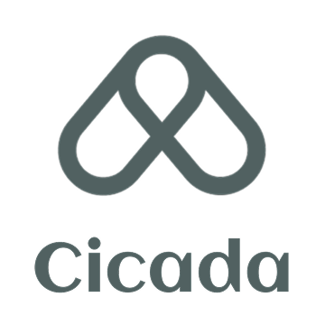

I’m a multidisciplinary problem-solver with a background in business, UX design, and seven years of front-end engineering, enabling me to bridge user needs, technical constraints, and product decisions.
I specialize in translating complex systems into clear workflows and demos, with experience spanning UI/UX design, technical writing (70+ articles), and hands-on workshops that drive adoption and alignment.
Signature Demo - From Insight to Impact
In 2021, I identified a workflow gap in our front-end team and led the adoption of Figma to unify design and handoff practices. I designed and delivered a
105-minute hands-on workshop
, and this video is a 2.5-minute highlight distilled from that session. The workflow has shaped our team’s process for over four years, improving clarity, speed, and collaboration.
Unified the design-to-engineering workflow by introducing Figma, reducing back-and-forth and improving cross-functional delivery speed.
Built reusable UI components and scalable front-end patterns adopted across global platforms, supporting teams in Taiwan, China, the U.S., Mexico, and Vietnam.
Improved UI structure, information hierarchy, and interaction patterns across internal platforms, contributing to measurable business impact (including a 2.5% increase in system-generated revenue).
Owned end-to-end front-end delivery for Mantidfly (Vue.js) and Cicada (jQuery), covering wireframes, UI/UX refinement, feature implementation, and i18n support.
Expanded into API integration and backend fundamentals, reducing dependency bottlenecks and improving collaboration between engineering and product teams.
Selected Projects
1. UI/UX Refinement for Internal Monitoring Dashboard (Confidential)
Collaborated cross-functionally with the Data Analysis group to redesign an internal monitoring system, after being invited for my UI/UX expertise. Led a dark-mode visual refresh to improve readability and usability in a high-density operational dashboard.
Through usage review and workflow analysis, I identified deeper UX issues beyond visual design, including fragmented layouts and unclear task grouping. I proposed a revised information architecture with clearer hierarchy and tab-based categorization, significantly improving operational clarity and receiving strong positive feedback from both engineers and management.
Visual DesignBrand IdentityIllustrationDesign System
I was responsible for designing platform-level logos and a set of branded visual assets across multiple internal product lines. This included defining consistent visual language and illustration styles to support product identity while scaling across different systems.
(1) Brand Identity — Cicada & Mantidfly

Cicada — Data Analytics Platform
A platform logo emphasizing clarity and structured data flow.
Mantidfly — Monitoring & Notification Platform
A logo reflecting alertness and smooth message delivery.
(2) Login Page Visual Design
A series of illustrated login-page backgrounds designed for different enterprise products, maintaining a clean and consistent visual style across the platform.
Independently designed and developed a single-page online shop using Vue.js, focusing on component-based architecture and dynamic UI updates.
The project simulates a real-world e-commerce experience with state-driven rendering and reusable Vue components, ensuring clear separation of presentation and logic. Firebase is integrated for data storage and retrieval, enabling dynamic content updates and a maintainable application structure.
Over the past few years, I’ve written 70+ technical and UX articles across JavaScript, Vue, React, D3.js, CSS, Three.js, and full-stack development—focusing on turning complex engineering concepts into clear, actionable guidance for teams and learners.
Medium Article Collection
12 series · 78 articles · Updated regularly
A curated index of my Chinese technical articles, covering frontend engineering, frameworks, and practical development topics.